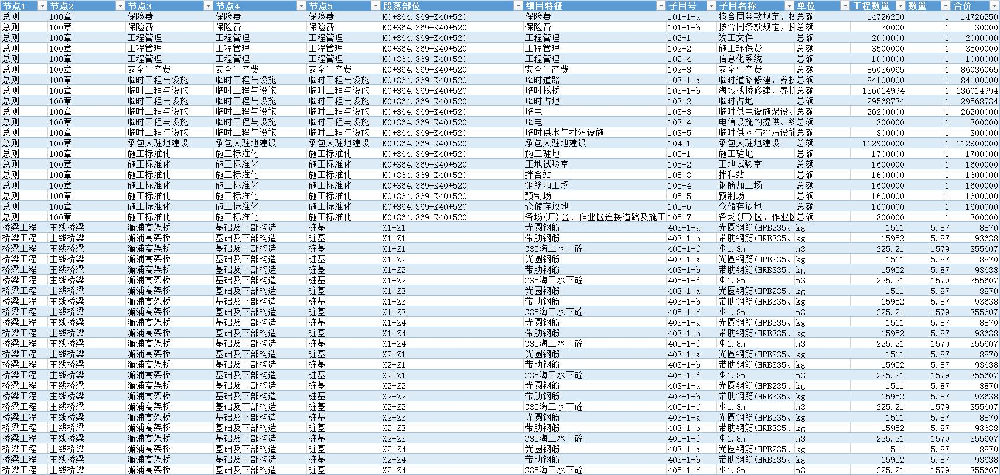
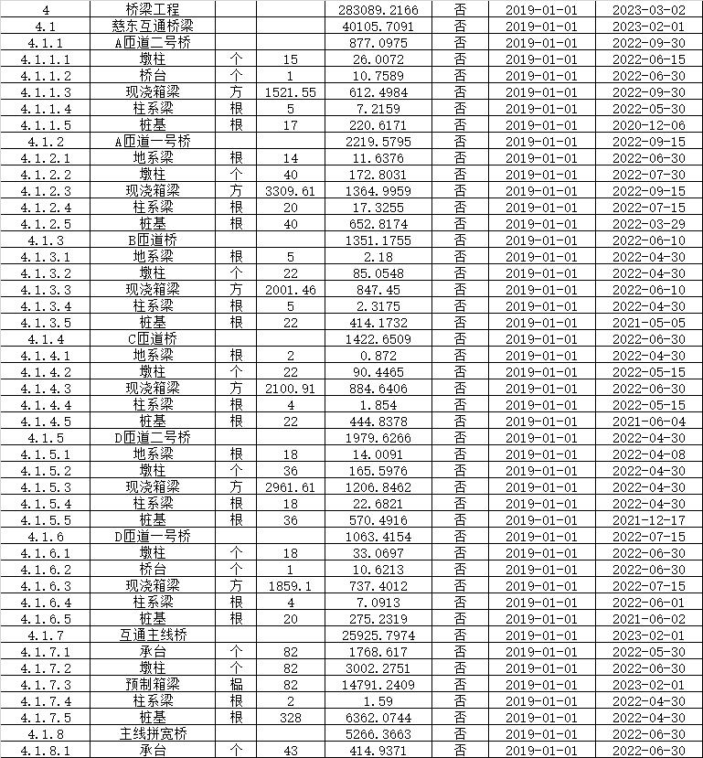
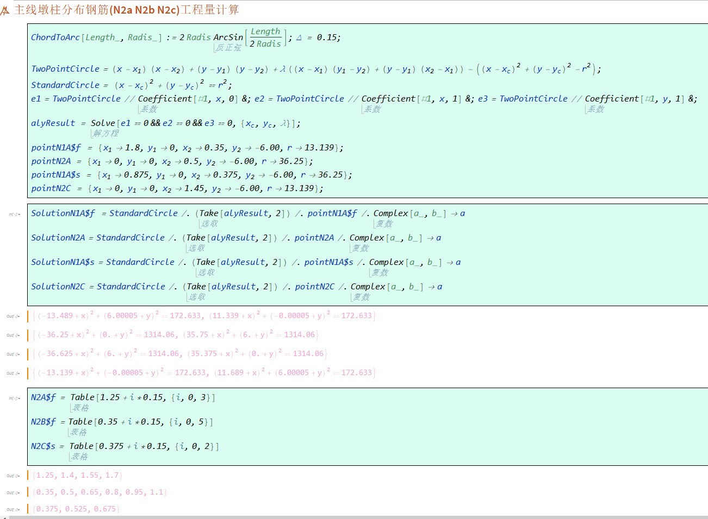
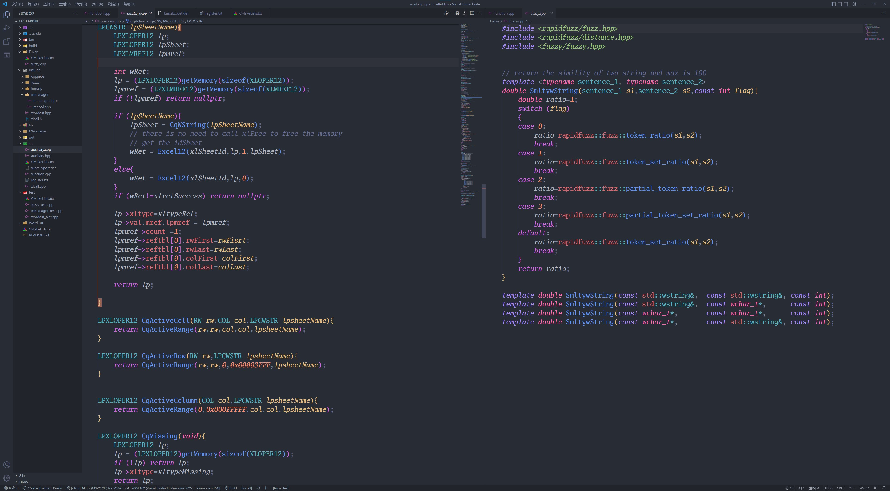
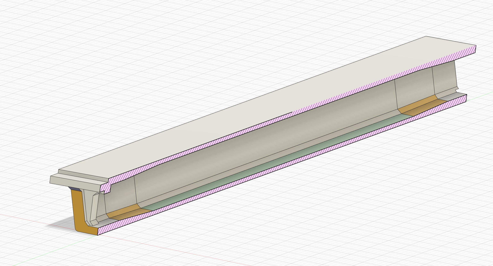

桥梁工程中的数据自动化处理
和三维信息展示
📝日常工作内容（数据汇总处理）
汇总工程全线的工程进度情况
在台账中填写当日完成情况
Step1-----完成日报表填写

Step2-----在台账中记录完成日期
Step3-----填报形象量统计表
存在的问题
因为杭甬复线工程量巨大，因此每天需要汇总的数据量是庞大的，特别是填入台账这一步，由于台账有上万行，通过筛选条目填入日期的工作方式耗时耗力😂。
并且实际工作中经常需要统计一个星期、一个月等一段时间内的形象量和产值完成情况，原先的表格无法按时间跨度生成统计表，而人手工去统计经常出现差错。
😊解决方案
为此我开发了一个WPS表格模块，它内置于WPS软件中，并集成了自动汇总，填表，计算产值等等功能。
项目地址🔗[]WPS表格模块🚀
- 其中第一个工具图标日报填写可以自动完成每日形象量的汇总工作，并更新统计表。
- 第二个工具图标台账助手可以通过日报表中的条目自动完成筛选和日期记录工作，大大节省时间。
- 而最右边的计算产值可以基于汇总情况自动计算各项对应的产值。
此处演示高级功能用法
另外一些例子
比如对台账数据做剪枝压缩（为了导入集团的新数据系统，这一步是必须的。但由于台账数据量很大，手动修改几乎无法完成。 此时可以用JavaScript写自动化脚本来完成工作。
剪枝压缩前
剪枝压缩后
JavaScript脚本代码
function maxOne(date1,date2){
if (date1==0) return date2;
if (date1>date2) return date1;
return date2;
}
function minOne(date1,date2){
if (date1==0) return date2;
if (date1>date2) return date2;
return date1;
}
function convertString(str){
let pat = new RegExp("[A-Z]?K(\\d+)(\\+(\\d+))?","gi");
let res1=pat.exec(str);
let res2=pat.exec(str);
if (res1==null || res2==null){
return 1;
}
let num1=0;
let num2=0;
if (res1[3]==undefined){
num1 = parseFloat(res1[1])*1000;
}
else{
num1 = parseFloat(res1[1])*1000+parseFloat(res1[3]);
}
if (res2[3]==undefined){
num2 = parseFloat(res2[1])*1000;
}
else{
num2 = parseFloat(res2[1])*1000+parseFloat(res2[3]);
}
return num2 - num1;
}
function ConvertTable(sheetName,programName,prefixIndex){
// create or return a sheetName sheet
let startIndex = 2;
let endIndex = Cells.Item(1,1).End(xlDown).Row;
let currentST=ActiveSheet;
try{
var sheet = Sheets(sheetName);
sheet.Cells.Clear();
}
catch{
// Sheets is now collection object of sheets
Sheets.Add(undefined,Sheets.Item(Sheets.Count),1,undefined);
var sheet = ActiveSheet;
sheet.Name = sheetName;
currentST.Activate();
}
let destination = sheet.Cells;
let firstRow=startIndex;
let lastRow=endIndex;
destination.Columns.Item("G:H").NumberFormatLocal = "@";
var node_B=new Set();
var node_C=new Set();
var node_D=new Set();
var node_E=new Set();
let indexB;
let indexC;
let indexD;
let indexE;
var sum_B=0;
var sum_C=0;
var sum_D=0;
var sum_E=0;
var sum_F=0;
var destSave_B=0;
var destSave_C=0;
var destSave_D=0;
var destSave_E=0;
let content;
let destRow=2;
let flag;
// initiate the first B level
content = Range(`B${firstRow}`).Text;
node_B.add(content);
indexB = `${prefixIndex}.${node_B.size}`;
destination.Range(`A${destRow}`).Value2=indexB;
destination.Range(`B${destRow}`).Value2=content;
destSave_B=destRow;
destRow++;
// initiate the first C level
content = Range(`C${firstRow}`).Text;
node_C.add(content);
indexC = `${indexB}.${node_C.size}`;
destination.Range(`A${destRow}`).Value2=indexC;
destination.Range(`B${destRow}`).Value2=content;
destSave_C=destRow;
destRow++;
// initiate the first D level
content = Range(`D${firstRow}`).Text;
node_D.add(content);
indexD = `${indexC}.${node_D.size}`;
destination.Range(`A${destRow}`).Value2=indexD;
destination.Range(`B${destRow}`).Value2=content;
destSave_D=destRow;
destRow++;
// initiate the first E level
content = Range(`E${firstRow}`).Text;
node_E.add(content);
indexE = `${indexD}.${node_E.size}`;
destination.Range(`A${destRow}`).Value2=indexE;
destination.Range(`B${destRow}`).Value2=content;
destSave_E=destRow;
// main loop
while (firstRow<=lastRow){
flag=true;
// B level
content = Range(`B${firstRow}`).Text;
if (!node_B.has(content)){
destRow++;
// if content is new entry,add it to set
node_B.add(content);
indexB = `${prefixIndex}.${node_B.size}`;
destination.Range(`A${destRow}`).Value2=indexB;
destination.Range(`B${destRow}`).Value2=content;
if (flag){
destination.Range(`E${destSave_E}`).Value2=sum_F;
sum_E+=sum_F;
destination.Range(`E${destSave_D}`).Value2=sum_E;
sum_D+=sum_E;
destination.Range(`E${destSave_C}`).Value2=sum_D;
sum_C+=sum_D;
destination.Range(`E${destSave_B}`).Value2=sum_C;
sum_B+=sum_C;
sum_C=sum_D=sum_E=sum_F=0;
node_C.clear();
node_D.clear();
node_E.clear();
flag=false;
}
destSave_B=destRow;
destRow++;
}
// C level
content = Range(`C${firstRow}`).Text;
if (!node_C.has(content)){
destRow++;
// if content is new entry,add it to set
node_C.add(content);
indexC = `${indexB}.${node_C.size}`;
destination.Range(`A${destRow}`).Value2=indexC;
destination.Range(`B${destRow}`).Value2=content;
if (flag){
destination.Range(`E${destSave_E}`).Value2=sum_F;
sum_E+=sum_F;
destination.Range(`E${destSave_D}`).Value2=sum_E;
sum_D+=sum_E;
destination.Range(`E${destSave_C}`).Value2=sum_D;
sum_C+=sum_D;
sum_D=sum_E=sum_F=0;
node_D.clear();
node_E.clear();
flag=false;
}
destSave_C=destRow;
destRow++;
}
// D level
content = Range(`D${firstRow}`).Text;
if (!node_D.has(content)){
destRow++;
// if content is new entry,add it to set
node_D.add(content);
indexD = `${indexC}.${node_D.size}`;
destination.Range(`A${destRow}`).Value2=indexD;
destination.Range(`B${destRow}`).Value2=content;
if (flag){
destination.Range(`E${destSave_E}`).Value2=sum_F;
sum_E+=sum_F;
destination.Range(`E${destSave_D}`).Value2=sum_E;
sum_D+=sum_E;
sum_E=sum_F=0;
node_E.clear();
flag=false;
}
destSave_D=destRow;
destRow++;
}
// E level
content = Range(`E${firstRow}`).Text;
if (!node_E.has(content)){
destRow++;
// if content is new entry,add it to set
node_E.add(content);
indexE = `${indexD}.${node_E.size}`;
destination.Range(`A${destRow}`).Value2=indexE;
destination.Range(`B${destRow}`).Value2=content;
// extra code
if (flag){
destination.Range(`E${destSave_E}`).Value2=sum_F;
sum_E+=sum_F;
sum_F=0;
flag=false;
}
destSave_E=destRow;
}
// last level
sum_F+=Range(`K${firstRow}`).Value2;
firstRow++;
}
destination.Range(`E${destSave_E}`).Value2=sum_F;
sum_E+=sum_F;
destination.Range(`E${destSave_D}`).Value2=sum_E;
sum_D+=sum_E;
destination.Range(`E${destSave_C}`).Value2=sum_D;
sum_C+=sum_D;
destination.Range(`E${destSave_B}`).Value2=sum_C;
sum_B+=sum_C;
destination.Range('A1').Value2=prefixIndex;
destination.Range('B1').Value2=programName;
destination.Range('E1').Value2=sum_B;
console.log("Completed!");
}
function createNewTable(){
ConvertTable('桥梁导入表','桥梁工程','4');
}
数据高级筛选📑
在这个例子中，通过JavaScript脚本代码以一种复杂的规则重新组合并筛选出统计表

📝日常工作内容（变更费用计算和上报）
上报变更申请单
根据设计下发图纸计算混凝土、钢筋等材料变更数量
在计算变更费用时，计算材料数量的变化往往是难点
对此，我利用软件Mathmatica进行数学编程
用mathematica计算变截面箱梁的体积积分
钢筋量变化往往计算起来比较麻烦
在我遇到的一份变更中需要计算花瓶墩曲面上主筋和分布钢筋相交点，并以此交点截断分布钢筋
用mathematica可以轻松推导出曲面上的钢筋交点，并计算截断后的长度
扩展Excel功能（fuzzy match)
在处理数据的工程中，经常会遇到需要将从下游收集来的数据合并到标准统计表格中 但是由于往往不能提供标准名称，我们需要人工一个个核对输入表单中去。此时我想到了是否可以 将大数据处理中的模糊匹配算法移植到 Excel 中，用人工智能算法来替代人工识别。
为此我编写了一个开源程序框架，在这个框架下我整合了基于深度学习算法的中文分词库JIEBA和基于Levenshtein距离RapidFuzzy算法 并将其以原生表格函数的方式移植入 Excel 中。
ExcelAddin项目
基于WebGL的3D桥梁结构展示方案
- 用fusion360构建特征桥梁结构物的参数化模型
- 用WebGL对模型进行端渲染、并处理展览和交互
- 将网页端展览服务部署到服务器上
澥浦互通主线拼宽50m梁边跨
鼠标控制旋转
感谢各位领导观看😄😄